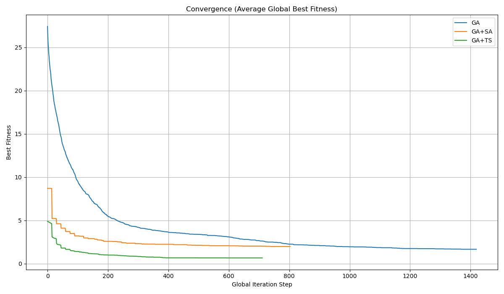
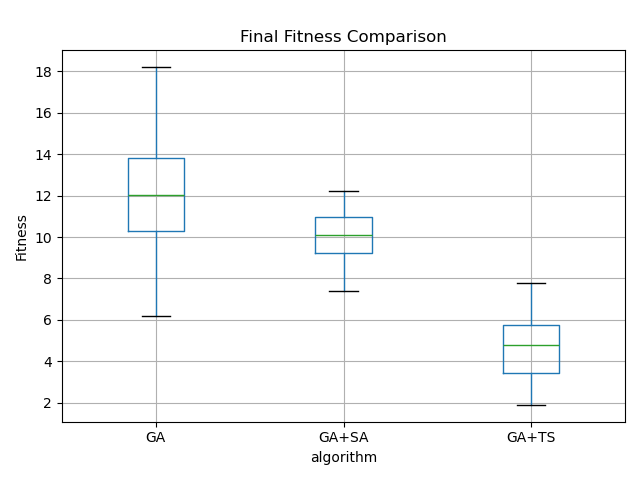
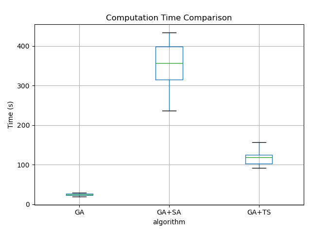
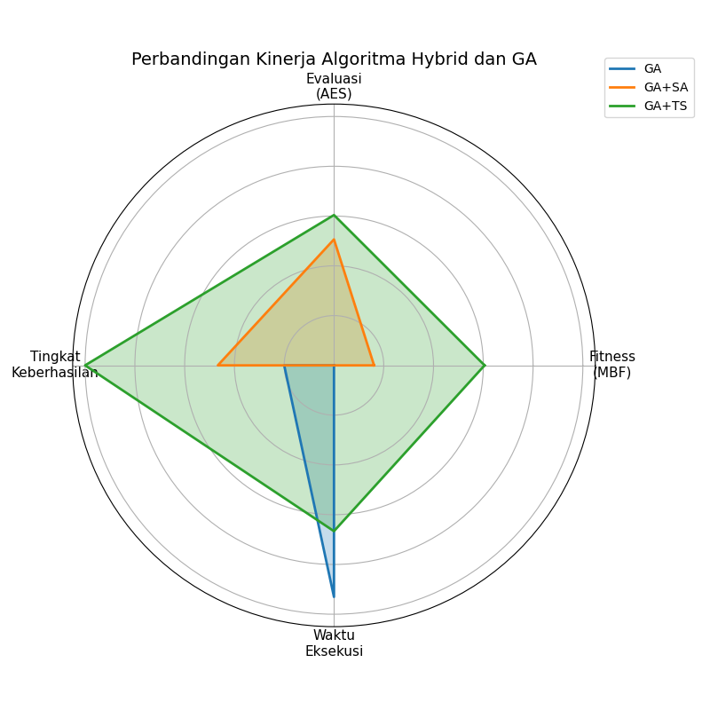

Generated: 2025-06-01 20:58:40
| algorithm | MBF | MBF_std | AES | SR | avg_time | time_std |
|---|---|---|---|---|---|---|
| GA | 12.003333 | 2.739051 | 64491.666667 | 20.000000 | 24.558194 | 2.516310 |
| GA+SA | 10.070000 | 1.209203 | 31842.857143 | 46.666667 | 353.518564 | 56.148941 |
| GA+TS | 4.740000 | 1.480121 | 25536.666667 | 100.000000 | 117.975295 | 16.330683 |




Note: All metrics are averaged across trials.
{
"count": {
"GA": 30.0,
"GA+SA": 30.0,
"GA+TS": 30.0
},
"mean": {
"GA": 12.003333333333332,
"GA+SA": 10.069999999999999,
"GA+TS": 4.74
},
"std": {
"GA": 2.739051350166801,
"GA+SA": 1.2092032144321745,
"GA+TS": 1.4801211506797862
},
"min": {
"GA": 6.199999999999999,
"GA+SA": 7.4,
"GA+TS": 1.9
},
"25%": {
"GA": 10.3,
"GA+SA": 9.225,
"GA+TS": 3.45
},
"50%": {
"GA": 12.05,
"GA+SA": 10.1,
"GA+TS": 4.8
},
"75%": {
"GA": 13.825,
"GA+SA": 10.95,
"GA+TS": 5.75
},
"max": {
"GA": 18.2,
"GA+SA": 12.2,
"GA+TS": 7.8
}
}
{
"count": {
"GA": 30.0,
"GA+SA": 30.0,
"GA+TS": 30.0
},
"mean": {
"GA": 24.5581937233607,
"GA+SA": 353.5185643275579,
"GA+TS": 117.97529493172964
},
"std": {
"GA": 2.5163098053583384,
"GA+SA": 56.14894102252141,
"GA+TS": 16.330683011498614
},
"min": {
"GA": 19.50936508178711,
"GA+SA": 235.83822536468506,
"GA+TS": 92.10649919509888
},
"25%": {
"GA": 22.944164037704468,
"GA+SA": 314.35790687799454,
"GA+TS": 103.28120279312134
},
"50%": {
"GA": 24.07869565486908,
"GA+SA": 356.96675992012024,
"GA+TS": 118.89920449256897
},
"75%": {
"GA": 26.578822195529938,
"GA+SA": 398.23047173023224,
"GA+TS": 125.31090927124023
},
"max": {
"GA": 29.38685393333435,
"GA+SA": 433.60948848724365,
"GA+TS": 156.83144330978394
}
}
{
"count": {
"GA": 30.0,
"GA+SA": 30.0,
"GA+TS": 30.0
},
"mean": {
"GA": 1158.3666666666666,
"GA+SA": 656.5,
"GA+TS": 510.73333333333335
},
"std": {
"GA": 131.52487199774416,
"GA+SA": 101.96982312226596,
"GA+TS": 81.27600202856392
},
"min": {
"GA": 879.0,
"GA+SA": 444.0,
"GA+TS": 393.0
},
"25%": {
"GA": 1072.0,
"GA+SA": 594.0,
"GA+TS": 436.5
},
"50%": {
"GA": 1151.0,
"GA+SA": 676.5,
"GA+TS": 505.0
},
"75%": {
"GA": 1227.75,
"GA+SA": 725.25,
"GA+TS": 551.25
},
"max": {
"GA": 1420.0,
"GA+SA": 804.0,
"GA+TS": 712.0
}
}
Note: All statistics are calculated per algorithm.